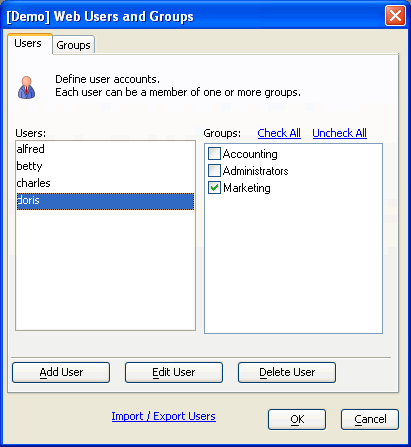

Adding Users
All users who login to your web application have to be first registered in the user table.
Display the Web Projects Control Panel.
Click Security to display the Web Security dialog.
Select Users and Groups and click OK to display the Web Users and Groups dialog.
Display the Users tab. For each person:
-
Click Add User to display the Add New User dialog.
-
Enter the appropriate values in the controls shown. The controls shown are determined by the security parameters selected.
Click OK.
Display the Groups tab. For each group, click Add Group, enter the group's name, and click OK.
Display the Users tab. For each person set the appropriate group assignments.

Limitations
Web publishing applications only.
See Also
Web Application Security Framework, Adding Users from the Desktop, Adding Users with a Web Component